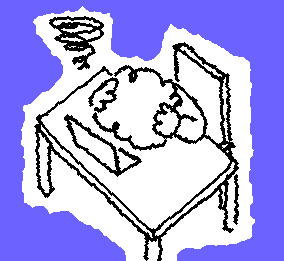

Defeating AI License Plate Readers: My Capstone
Published 4/30/2026
For my capstone project, I researched whether adversarial noise could be used to defeat ALPR (Automatic License Plate Recognition) models, the kind powering systems like Flock cameras, which are increasingly used by municipalities, retailers, and law enforcement to track vehicle movement at scale. The goal was straightforward: if you can introduce carefully engineered distortions to a license plate image, can you prevent these systems from reading it reliably?
The answer, it turns out, is yes, with caveats.
The techniques we explored included shape distortion, texture manipulation, sinusoidal warping, and Gaussian noise. I also used GIMP to mock up what a real-world "defended" plate might look like, not just as a theoretical result, but as a tangible artifact someone could actually evaluate. The final product is a publicly accessible, production-ready research tool.
What I learned on the technical side
File manipulation and dataset management. Our primary dataset came from a university in Brazil, the UFPR-ALPR dataset, and contained thousands of annotated vehicle images. Wrangling that into a usable format for training and evaluation was a significant effort in its own right, involving custom scripts to reformat annotations into YOLO-compatible bounding boxes and reorganize the directory structure entirely.
Building a production API. The distortion engine, PlateShapez, is a fully packaged Python library with a CLI, a Python API, configuration file support, and a plugin-style perturbation registry. I used Processing (PDE) early in the project to prototype the shape-drawing logic, then migrated the full system to Python with a proper architecture. The API supports reproducible generation via random seeds, dry-run previews, and structured JSON metadata for every generated image.
Code standardization with UV. I used UV to manage dependencies and enforce a consistent development environment. The project has a full CI pipeline on GitHub Actions, pre-commit hooks, Ruff for formatting and linting, and mypy for type checking. The goal was to build something a stranger could clone, run, and trust, not just something that worked on my machine.
NEAT as an optimization backbone. Rather than hand-tuning perturbation parameters, we used NeuroEvolution of Augmenting Topologies (NEAT) as an optimization strategy, evolving configurations over multiple generations using evasion rate as the fitness signal. This let the system discover non-obvious parameter combinations that a manual sweep would likely miss.
Where it broke down
The technical execution wasn't the problem. The problem was that two people built essentially the entire project. Myself and one other teammate were genuinely invested, we understood the problem, cared about the outcome, and drove everything forward. The rest of the group never got there. The work was too far outside their comfort zone. They were used to loading a CSV, running a model, and calling it done. Building a synthetic dataset pipeline from scratch, implementing a custom perturbation framework, training a YOLO detector, that's a different category of effort, and we never successfully brought them into it.
To be fair, we tried. We built out a shared checklist and assigned work explicitly. But a checklist doesn't manufacture engagement, and it doesn't replace the hours of context-building that made the project make sense to us but not to them. Work concentrated on two people. The presentation suffered because the people presenting it didn't fully understand what they were presenting.

The failure came from a lack of project management
To address this, I believe that I should be focusing more on project management skills, specifically Lean. Lean project management isn't just about efficiency, it's about eliminating waste, and the biggest source of waste on a team isn't bad code, it's misalignment. When people don't understand why something matters, they disengage. When they disengage, the work concentrates on fewer shoulders. And when the work concentrates, quality suffers in the places you're not looking. In our case, that showed up on the presentation stage, not in the codebase.
In the future
If I could go back, I'd spend the first week differently. Less time architecting the pipeline, more time getting everyone to feel the problem. Show the team a Flock camera mounted on a telephone pole. Pull up a map of how many are operating in your city. Make it real. Because once someone understands that a network of cameras can reconstruct your daily routine from your license plate alone, the synthetic dataset stops feeling abstract and starts feeling necessary.
That's the Lean principle I underestimated: shared understanding as a prerequisite to shared effort. You can't pull people into unfamiliar territory with a task list. You need a story they care about first.
Final Thought
The technical wins are real and I'm proud of them. Using NEAT as an optimization strategy for adversarial perturbations was genuinely novel territory for our team. Building a production-ready API with UV, structuring an image processing pipeline from scratch, working with real-world constraints like plate geometry and lighting variance, that's not a class assignment, that's engineering. Winning Best Project reflects that.
But the gap between "best project" and "best presentation" is a gap I want to close. And closing it has nothing to do with slide design or public speaking. It has everything to do with building teams that are bought in before the first line of code is written.
Best project, worst presentation. Lesson logged.